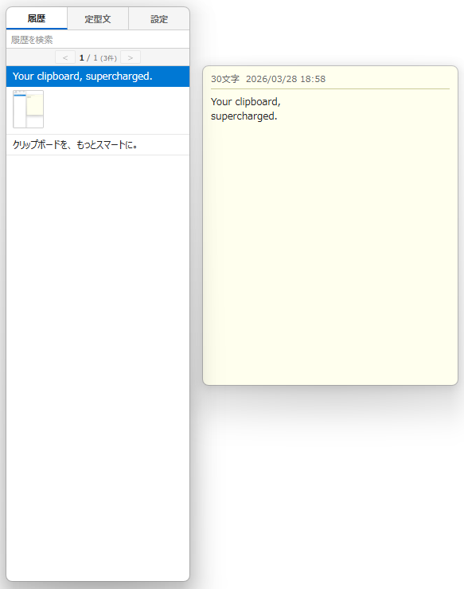
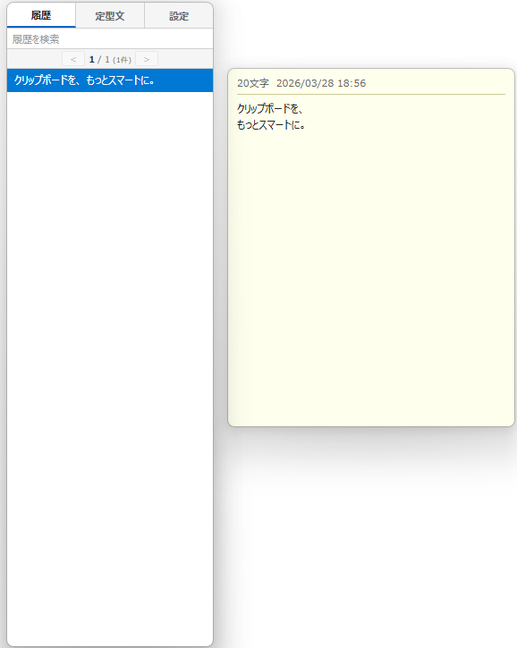

Your clipboard,
supercharged.


Clipor is a blazing-fast, lightweight clipboard manager for Windows. Built with Rust and Tauri for native performance with minimal resource usage.
1,000+
History Items
3 Hotkey Modes
Custom Hotkey / Double Ctrl / Double Alt
AES-256
Encryption